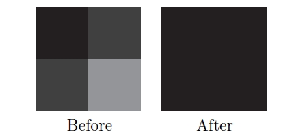

- SSR(Screen Space Reflection)
- 화면 공간이므로, 당연히 화면밖이나 가려져 있는 것을 반사시키진 못한다
- 화면 바깥과 가까우면 fadeout
- 어느정도 구께일때만 반사적용
- 깊이버퍼를 이용함으로, 깊이버퍼를 안쓰는 오브젝트는 반사가 안됨
- 3d ray marching 언더샘플링 오버샘플링
- 모션블러 감소
- SSR 준비물
- 색상
- 깊이(위치를 얻기 위해)
- 노말
- 반사 마스크
| 구할것 | 구하는 법 |
|---|
| 카메라레이 | uv와 카메라 역행렬을 이용 |
| 반사레이 시작점(VS) | 카메라 레이와 뎁스버퍼를 이용 |
| 입사벡터(VS) | 반사레이 시작점을 노말라이즈함. (incident : 입사/투사되는) |
| 반사레이벡터(VS) | 입사벡터와 노멀을 이용 |
| 반사레이 도착점(VS) | 반사레이벡터에서 점진적 이동(Ray Marching) |
| 반사색 | 반사레이 도착점의 색 (두께처리가 있으면 처리하고, uv가 범위안에 있는지도 체크) |
| |
|---|
| 3D | 원근법때문에 언더샘플링(가까운거), 오버샘플링(먼것) 이슈 |
| 2D | DDA(Digital Differential Analyzer) |
_material_SSR.SetMatrix( "_MATRIX_InverseCameraProjection", _camera.projectionMatrix.inverse);
// vert =====================
// 카메라레이
float4 cameraRay = float4(IN.uv * 2 - 1, 1, 1);
cameraRay = mul(_MATRIX_InverseCameraProjection, cameraRay);
OUT.cameraRay = cameraRay.xyz / cameraRay.w;
// frag =====================
half reflectMask = SAMPLE_TEXTURE2D(_ReflectMask_, sampler_ReflectMask, IN.uv).r;
clip(reflectMask - 0.1);
// 반사레이 시작점
half sceneRawDepth = SampleSceneDepth(IN.uv);
half scene01Depth = Linear01Depth(sceneRawDepth, _ZBufferParams);
half3 reflectRayStartPositionWS = IN.cameraRay * sceen01Depth;
// 입사벡터
half3 incidentVec = normalize(reflectRayStartPositionWS);
// 반사레이벡터
half3 sceneNormal = SampleSceneNormals(IN.uv);
half3 reflectRayDirWS = normalize(reflect(incidentVec, sceneNormal));
// 레이 처리
half step = _MaxDistance / _MaxIteration;
half stepDistance = _MinDistance + step;
half availableThickness = _MaxThickness / _MaxIteration;
int iteratorCount = min(64, _MaxIteration);
half3 reflectionColor = 0;
UNITY_UNROLL
for (int i = 0; i < iteratorCount; ++i)
{
// 반사레이 도착점
half3 reflectRayEndPositionWS = reflectRayStartPositionWS + (reflectRayDirWS * stepDistance);
float4 reflectRayEndPositionCS = TransformWorldToHClip(reflectRayEndPositionWS);
float2 reflectRayEndUV = reflectRayEndPositionCS.xy / reflectRayEndPositionCS.w * 0.5 + 0.5;
bool isValidUV = max(abs(reflectRayEndUV.x - 0.5), abs(reflectRayEndUV.y - 0.5)) <= 0.5;
if (!isValidUV)
{
break;
}
half reflectRayEndDepth = ComputeDepth(reflectRayEndPositionCS);
half sceneReflectRayEndDepth = SampleSceneDepth(reflectRayEndUV);
half depthDiff = reflectRayEndDepth - sceneReflectRayEndDepth;
if (0 < depthDiff && depthDiff < availableThickness)
{
// 반사색
reflectionColor = SAMPLE_TEXTURE2D(_MainTex, sampler_MainTex, reflectRayEndUV).rgb;
break;
}
stepDistance += step;
}
return half4(reflectionColor, 1);
// etc ==========================
float ComputeDepth(float4 positionCS)
{
#if defined(SHADER_TARGET_GLSL) || defined(SHADER_API_GLES) || defined(SHADER_API_GLES3)
return (positionCS.z / positionCS.w) * 0.5 + 0.5;
#else
return (positionCS.z / positionCS.w);
#endif
}
???
float sampleDepth = tex_depth.read(tid).x;
float4 samplePosInCS = float4(((float2(tid)+0.5)/sceneInfo.ViewSize)*2-1.0f, sampleDepth, 1);
samplePosInCS.y *= -1;
incidentVec = normalize(rayStartPositionWS)
N
half3 reflectionColor = 0;
if (reflectMask > 0)
{
reflectionColor =
}
half3 scaledR = _RayStepScale * R;
for (_MaxRayStep)
{
}
- Hierarchical-Z buffer
- 기존 Z buffer를 축소시키며 계층을 만들며(밉맵)
- 기존 Z Buffer보다 비교적 적은 샘플 횟수로 교차점을 얻을 수 있다.
